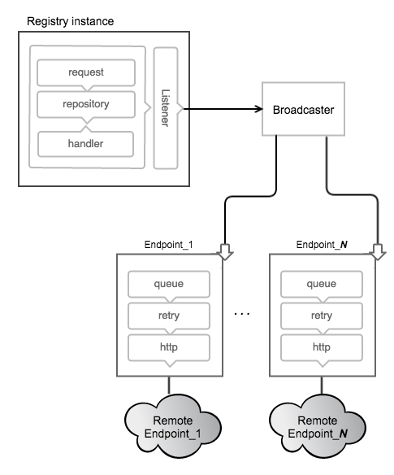

The Registry supports sending webhook notifications in response to events happening within the registry. Notifications are sent in response to manifest pushes and pulls and layer pushes and pulls. These actions are serialized into events. The events are queued into a registry-internal broadcast system which queues and dispatches events to Endpoints.

Endpoints
Notifications are sent to endpoints via HTTP requests. Each configured endpoint has isolated queues, retry configuration and http targets within each instance of a registry. When an action happens within the registry, it is converted into an event which is dropped into an inmemory queue. When the event reaches the end of the queue, an http request is made to the endpoint until the request succeeds. The events are sent serially to each endpoint but order is not guaranteed.
Configuration
To setup a registry instance to send notifications to endpoints, one must add them to the configuration. A simple example follows:
notifications:
endpoints:
- name: alistener
url: https://mylistener.example.com/event
headers:
Authorization: [Bearer <your token, if needed>]
timeout: 500ms
threshold: 5
backoff: 1s
The above would configure the registry with an endpoint to send events to
https://mylistener.example.com/event, with the header "Authorization: Bearer
For details on the fields, see the configuration documentation.
A properly configured endpoint should lead to a log message from the registry upon startup:
INFO[0000] configuring endpoint alistener (https://mylistener.example.com/event), timeout=500ms, headers=map[Authorization:[Bearer <your token if needed>]] app.id=812bfeb2-62d6-43cf-b0c6-152f541618a3 environment=development service=registry
Events
Events have a well-defined JSON structure and are sent as the body of notification requests. One or more events are sent in a structure called an envelope. Each event has a unique ID that can be used to uniquely identify incoming requests, if required. Along with that, an action is provided with a target, identifying the object mutated during the event.
The fields available in an event are described below.
| Field | Type | Description |
|---|---|---|
| id | string | ID provides a unique identifier for the event. |
| timestamp | Time | Timestamp is the time at which the event occurred. |
| action | string | Action indicates what action encompasses the provided event. |
| target | distribution.Descriptor | Target uniquely describes the target of the event. |
| length | int | Length in bytes of content. Same as Size field in Descriptor. |
| repository | string | Repository identifies the named repository. |
| fromRepository | string | FromRepository identifies the named repository which a blob was mounted from if appropriate. |
| url | string | URL provides a direct link to the content. |
| tag | string | Tag identifies a tag name in tag events. |
| request | RequestRecord | Request covers the request that generated the event. |
| actor | ActorRecord. | Actor specifies the agent that initiated the event. For most situations, this could be from the authorization context of the request. |
| source | SourceRecord | Source identifies the registry node that generated the event. Put differently, while the actor "initiates" the event, the source "generates" it. |
The following is an example of a JSON event, sent in response to the pull of a manifest:
{
"events": [
{
"id": "320678d8-ca14-430f-8bb6-4ca139cd83f7",
"timestamp": "2016-03-09T14:44:26.402973972-08:00",
"action": "pull",
"target": {
"mediaType": "application/vnd.docker.distribution.manifest.v2+json",
"digest": "sha256:fea8895f450959fa676bcc1df0611ea93823a735a01205fd8622846041d0c7cf",
"size": 708,
"length": 708,
"repository": "hello-world",
"url": "http://192.168.100.227:5000/v2/hello-world/manifests/sha256:fea8895f450959fa676bcc1df0611ea93823a735a01205fd8622846041d0c7cf",
"tag": "latest"
},
"request": {
"id": "6df24a34-0959-4923-81ca-14f09767db19",
"addr": "192.168.64.11:42961",
"host": "192.168.100.227:5000",
"method": "GET",
"useragent": "curl/7.38.0"
},
"actor": {},
"source": {
"addr": "xtal.local:5000",
"instanceID": "a53db899-3b4b-4a62-a067-8dd013beaca4"
}
}
]
}
The target struct of events which are sent when manifests and blobs are deleted contains a subset of the data contained in Get and Put events. Specifically, only the digest and repository are sent.
{
"target": {
"digest": "sha256:d89e1bee20d9cb344674e213b581f14fbd8e70274ecf9d10c514bab78a307845",
"repository": "library/test"
}
}
Note: As of version 2.1, the
lengthfield for event targets is being deprecated for thesizefield, bringing the target in line with common nomenclature. Both will continue to be set for the foreseeable future. Newer code should favorsizebut accept either.
Envelope
The envelope contains one or more events, with the following json structure:
{
"events": [ "..." ]
}
While events may be sent in the same envelope, the set of events within that envelope have no implied relationship. For example, the registry may choose to group unrelated events and send them in the same envelope to reduce the total number of requests.
The full package has the mediatype "application/vnd.docker.distribution.events.v1+json", which is set on the request coming to an endpoint.
An example of a full event may look as follows:
```http request
POST /callback HTTP/1.1
Host: application/vnd.docker.distribution.events.v1+json
Authorization: Bearer
{ "events": [ { "id": "asdf-asdf-asdf-asdf-0", "timestamp": "2006-01-02T15:04:05Z", "action": "push", "target": { "mediaType": "application/vnd.docker.distribution.manifest.v1+json", "digest": "sha256:fea8895f450959fa676bcc1df0611ea93823a735a01205fd8622846041d0c7cf", "length": 1, "repository": "library/test", "url": "https://example.com/v2/library/test/manifests/sha256:c3b3692957d439ac1928219a83fac91e7bf96c153725526874673ae1f2023f8d5" }, "request": { "id": "asdfasdf", "addr": "client.local", "host": "registrycluster.local", "method": "PUT", "useragent": "test/0.1" }, "actor": { "name": "test-actor" }, "source": { "addr": "hostname.local:port" } }, { "id": "asdf-asdf-asdf-asdf-1", "timestamp": "2006-01-02T15:04:05Z", "action": "push", "target": { "mediaType": "application/vnd.docker.container.image.rootfs.diff+x-gtar", "digest": "sha256:c3b3692957d439ac1928219a83fac91e7bf96c153725526874673ae1f2023f8d5", "length": 2, "repository": "library/test", "url": "https://example.com/v2/library/test/blobs/sha256:c3b3692957d439ac1928219a83fac91e7bf96c153725526874673ae1f2023f8d5" }, "request": { "id": "asdfasdf", "addr": "client.local", "host": "registrycluster.local", "method": "PUT", "useragent": "test/0.1" }, "actor": { "name": "test-actor" }, "source": { "addr": "hostname.local:port" } }, { "id": "asdf-asdf-asdf-asdf-2", "timestamp": "2006-01-02T15:04:05Z", "action": "push", "target": { "mediaType": "application/vnd.docker.container.image.rootfs.diff+x-gtar", "digest": "sha256:c3b3692957d439ac1928219a83fac91e7bf96c153725526874673ae1f2023f8d5", "length": 3, "repository": "library/test", "url": "https://example.com/v2/library/test/blobs/sha256:c3b3692957d439ac1928219a83fac91e7bf96c153725526874673ae1f2023f8d5" }, "request": { "id": "asdfasdf", "addr": "client.local", "host": "registrycluster.local", "method": "PUT", "useragent": "test/0.1" }, "actor": { "name": "test-actor" }, "source": { "addr": "hostname.local:port" } } ] }
## Responses
The registry is fairly accepting of the response codes from endpoints. If an
endpoint responds with any 2xx or 3xx response code (after following
redirects), the message is considered to have been delivered, and is discarded.
In turn, it is recommended that endpoints are accepting of incoming responses,
as well. While the format of event envelopes are standardized by media type,
any "pickyness" about validation may cause the queue to backup on the
registry.
## Monitoring
The state of the endpoints are reported via the debug/vars http interface,
usually configured to `http://localhost:5001/debug/vars`. Information such as
configuration and metrics are available by endpoint.
The following provides an example of a few endpoints that have experienced
several failures and have since recovered:
```json
{
"notifications": {
"endpoints": [
{
"name": "local-5003",
"url": "http://localhost:5003/callback",
"Headers": {
"Authorization": [
"Bearer \u003can example token\u003e"
]
},
"Timeout": 1000000000,
"Threshold": 10,
"Backoff": 1000000000,
"Metrics": {
"Pending": 76,
"Events": 76,
"Successes": 0,
"Failures": 0,
"Errors": 46,
"Statuses": {
}
}
},
{
"name": "local-8083",
"url": "http://localhost:8083/callback",
"Headers": null,
"Timeout": 1000000000,
"Threshold": 10,
"Backoff": 1000000000,
"Metrics": {
"Pending": 0,
"Events": 76,
"Successes": 76,
"Failures": 0,
"Errors": 28,
"Statuses": {
"202 Accepted": 76
}
}
}
]
}
}
If using notification as part of a larger application, it is critical to monitor the size ("Pending" above) of the endpoint queues. If failures or queue sizes are increasing, it can indicate a larger problem.
The logs are also a valuable resource for monitoring problems. A failing endpoint leads to messages similar to the following:
ERRO[0340] retryingsink: error writing events: httpSink{http://localhost:5003/callback}: error posting: Post http://localhost:5003/callback: dial tcp 127.0.0.1:5003: connection refused, retrying
WARN[0340] httpSink{http://localhost:5003/callback} encountered too many errors, backing off
The above indicates that several errors caused a backoff and the registry waits before retrying.
Considerations
Currently, the queues are inmemory, so endpoints should be reasonably reliable. They are designed to make a best-effort to send the messages but if an instance is lost, messages may be dropped. If an endpoint goes down, care should be taken to ensure that the registry instance is not terminated before the endpoint comes back up or messages are lost.
This can be mitigated by running endpoints in close proximity to the registry instances. One could run an endpoint that pages to disk and then forwards a request to provide better durability.
The notification system is designed around a series of interchangeable sinks
which can be wired up to achieve interesting behavior. If this system doesn't
provide acceptable guarantees, adding a transactional Sink to the registry
is a possibility, although it may have an effect on request service time.
See the
godoc
for more information.